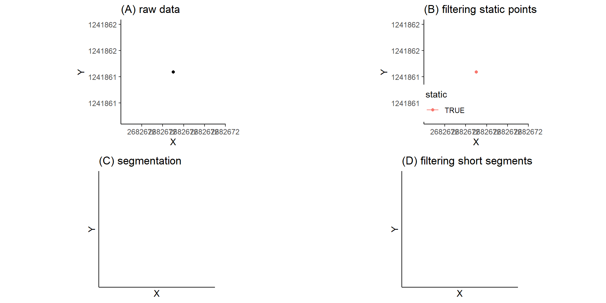
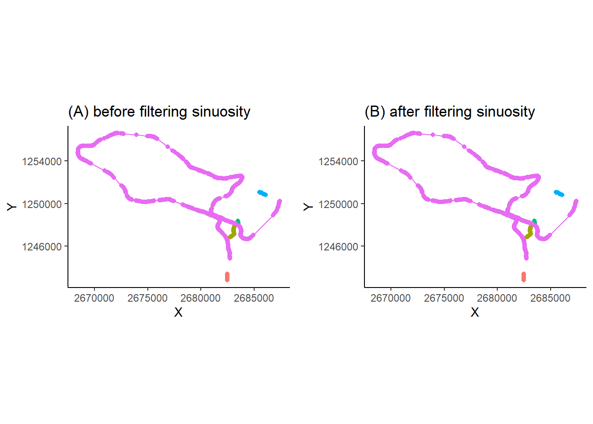
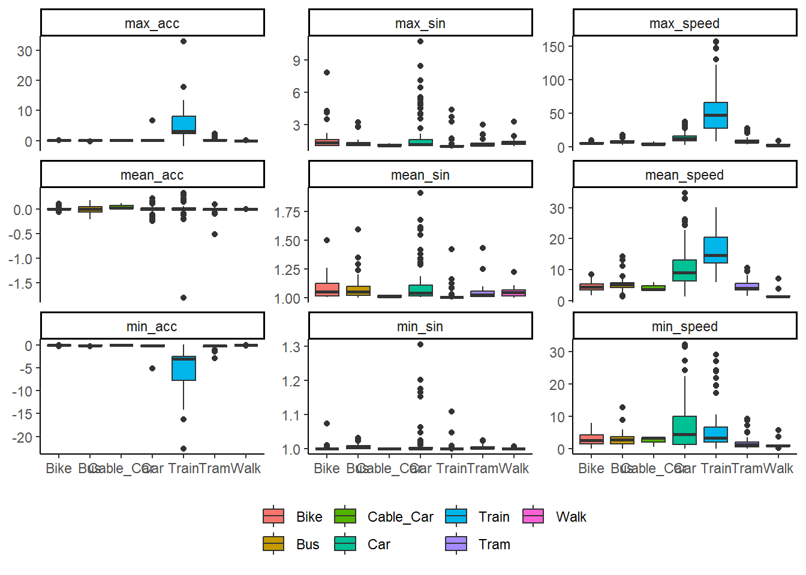

Implementation of a Analysis Tool for Travel Mode Detection in R
a Deciscion-Tree Approach
Abstract
Society philosophy merciful selfish sexuality depths overcome madness. Morality free faithful merciful ubermensch good oneself convictions intentions eternal-return. Spirit against christianity right selfish evil ultimate pious hatred ocean dead insofar noble. Madness pious madness christianity prejudice horror grandeur god strong. Ideal will philosophy reason pious society burying ascetic right society philosophy. Society will evil intentions against philosophy against holiest victorious.
1 Introduction
introduction blabla…The study will investigate different criteria such as speed, acceleration or location and use different features such as mean, minimum and maximum values for comparison with experimentally defined thresholds to achieve accurate mode of transport identification.
Hence, this research project aims to implement a basic data science procedure in R to identify travel modes from mobile GPS data collected with the POSMO-APP. The following two research question should be answered during that process:
- How can a basic analysis tool for travel mode detection from GPS data be implemented in R and what accuracy is achieved with it?
- What are the most effective criteria, features and thresholds for the detection of different travel modes?
2 Material and Methods
2.1 Datasets & Conceptual Model
We used movement data from one of our team members, collected with the POSMO-App over a period of 54 days (18.04.-10.06.2023). Throughout this period, with the sampling rate set to 5 seconds, a total of 61’279 data points were gathered. We proceeded with the following attributes:
- datetime
- geometry (X- and Y-Coordinates in CH1903+ LV95)
- transport_mode (manually corrected and validated in POSMO)
Additionally, the dataset swissTLM3D was obtained from (QUELLE?), whereof the following feature classes and attributes were used:
- TLM_STRASSE (OBJEKTART, geometry)
- TLM_EISENBAHN (VERKEHRSMITTEL, geometry)
- TLM_SCHIFFFAHRT (OBJEKTART, geometry)
- TLM_HALTESTELLE (OBJEKTART, geometry)
And last, a second POSMO-dataset provided by one of the other students was used for validation (see chapter ?). This data was collected over a period of 67 days (11.04-16.06.2023) with a sampling rate of 10s, resulting in a total of 46’305 datapoints. It was eventually corrected and validated for travel mode in POSMO as well and the same attributes were analyzed further.
The movement space was conceptualized, based on Laube et al. (2017), as continuous, 2D, and entity-based. Therefore, all datasets were structured as vector data. We modeled the movement as a series of unconstrained, intermittent, and time-stamped fixes, using the Lagrange perspective with event-based, active tracking since the POSMO-App collects GPS data.
2.2 Segmentation & Filtering
In order to assign transport modes to trajectories, the POSMO data had to be divided into sub-segments representing individual and continuous movements first. Additionally, as according to Laube & Purves (2011), moving objects in the real world almost always exhibit a variety of static and dynamic behaviors, filtering and segmentation is also required for the calculation of movement characteristics. The authors state that without filtering static segments will lead to an underestimation of speed and overestimation of sinuosity since the influence of GPS errors is greater during static phases.
Hence, an initial segmentation was performed by assigning a new segment ID whenever the time gap between consecutive fixes exceeded double the sampling rate (10s). This segmentation was performed, as the event-based tracking of the POSMO-App led to large gaps, which needed to be separated for the further calculations. Then, segmentation was performed according to Laube & Purves (2011), were static fixes are classified as those whose average Euclidean distance to other fixes inside a temporal window v is less than some threshold d. Here, a temporal window v of 30 seconds (6 fixes) and a threshold d of 2 meters were chosen and calculations were performed within each segment separately. Further, a new segment ID was assigned after every static period and static fixes were removed. Lastly, sub-segments with a length less than 500m were removed as well. In contrast to Laube & Purves (2011) these short segments were chosen according to a distance and not a temporal scale, as depending on the transport mode used, different temporal scales may be important. For example, a trajectory of a 3 minutes walk may not be of great interest, while a train or bus journey of 3 minutes could already be important. The filtering and segmentation for a exemplary day is visualized step by step in figure 1. Lastly, segments with a average sinuosity (calculated according to chapter 2.3) greater than 2 were removed as well, as they mostly represented GPS errors, as visible in figure 2. During that process, the dataset was segmented into 202 trajectories consisting of 37’942 fixes.

2.3 Calculating Movment Parameters
In order to differentiate between the different transportation modes, the movement parameters speed, acceleration and sinuosity were calculated. Speed was calculated according to Laube & Purves (2011) using three fixes located inside a temporal window w, which was set to 20 seconds. Acceleration was calculated based on the same principle and defined as the change in velocity over the change in time. The calculation of sinuosity was based on Laube & Purves (2011) as well, where it is defined as the ratio between a nominal track length and the line connecting the first and last points in the sampling window w consisting of 5 fixes. Hence, a sinuosity of 1 represents a straight line, while increasing sinuosity leads to higher values. All of these calculations were performed for each segment separately.

Next the minimum, maximum and average values were calculated for all three parameters (speed, acceleration, sinuosity) and every segment. Additionally, every segment was assigned with the adjusted travel mode from POSMO. As segmentation as done here and in POSMO may not be identical, points of the same segments may have several different transportation modes from POSMO. Hence, the transportation mode which was attributed to most points of a segment was chosen. Additionally, the percentage of points per segment attributed with the assigned mode was calculated for possible further analysis. The different features of the three parameters were then plotted by their transportation mode for exploratory analysis (figure 3).

It can be observed, that most transportation modes show similar patterns in terms of the calculated movement parameters, or at least have significant overlaps. Only train trajectories differ considerably from others regarding speed and acceleration. Hence, we have made the decision to approach the transport mode detection by first embedding the trajectories within their geographic context and classifying them based on this information, wherever possible.
2.4 Adding Geographic Context
According to Gschwend (2015) movement patterns are mostly quantified on the basis of geometric properties and the arrangement of the fixes, while the geographic environment surrounding the movement would provide useful semantics insights. As the exploratory data analysis of the movement parameters have shown hardly distinguishable features, we wanted to add this approach to our analysis. Hence, as described in chapter 2.1, several feature classes of the swissTLM3D were used and all roads, rails and boat-routes were merged into one background dataset. Next, a spatial join was performed, attributing every fix of the POSMO data the nearest feature of the merged background, as visualized in figure 4 for an exemplary day. Lastly, every segment was assigned with the nearest feature attributed to most of the points in a similar way it was done for the POSMO travel mode.
#| echo: false
#| warning: false
#| message: false
knitr::include_graphics("output_files/p7.tiff")Further, the feature class TLM_HALTESTELLE of swissTLM3D containing bus, train and boat stops was used as well. A buffer of 75 meters was calculated around every stop and a spatial join was performed testing for fixes to be within these buffers. Next, for every segment the information if the first and the last point were within a stop-buffer was saved additionally for further analysis. Finally, the information about the moving parameters were merged with the geographical context of the trajectories into a dataset ready for travel mode classification.
2.5 Travel Mode Detection
sf [335 × 13] (S3: sf/tbl_df/tbl/data.frame)
$ segment_id : Factor w/ 2555 levels "1","2","3","4",..: 2 8 24 26 32 34 44 60 62 66 ...
$ mean_speed : num [1:335] 1.23 7.88 4.39 5.22 4.58 ...
$ max_speed : num [1:335] 1.4 13.82 5.22 7.88 11.67 ...
$ min_speed : num [1:335] 1.0196 1.7532 2.8568 2.6591 0.0132 ...
$ mean_acc : num [1:335] 0.000607 -0.029014 -0.007735 -0.066902 -0.00466 ...
$ max_acc : num [1:335] 0.00659 0.17226 0.0231 -0.01555 0.23119 ...
$ min_acc : num [1:335] -0.00388 -0.31756 -0.05919 -0.104 -0.22258 ...
$ mean_sin : num [1:335] 1.01 1.04 1.11 1.06 1.05 ...
$ max_sin : num [1:335] 1.07 1.38 1.29 1.12 1.6 ...
$ min_sin : num [1:335] 1 1 1.01 1 1 ...
$ transport_mode_POSMO: chr [1:335] "Walk" "Bus" "Bus" "Bus" ...
$ percentage_tm_POSMO : num [1:335] 100 100 100 100 100 ...
$ geometry :sfc_MULTIPOINT of length 335; first list element: 'XY' num [1:27, 1:2] 2682667 2682674 2682683 2682686 2682688 ...
- attr(*, "sf_column")= chr "geometry"
- attr(*, "agr")= Factor w/ 3 levels "constant","aggregate",..: NA NA NA NA NA NA NA NA NA NA ...
..- attr(*, "names")= chr [1:12] "segment_id" "mean_speed" "max_speed" "min_speed" ...